GUI Loft User Manual -- How to use The GUI Loft.
Release date: See the Changes file
This is currently beta software, mostly when it comes to
some (unimplemented) parts the UI. Code quality and stability
should be good though. Please let me know of any bugs or user
interface quirks you find. mailto:johanl@bahnhof.se
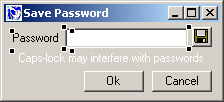
The GUI Loft is a powerful and easy-to-use WYSIWYG editor
(written in Perl) for designing Perl Win32::GUI windows. It
is also a set of classes used to create the window for you
at runtime.
You design your GUI in The GUI Loft and bring it to life
with a few lines of code, with the option of taking part in
the build process.
There is a User Manual, a Programmer's Reference, Demo code,
and a support mailing list.
- Download the binary distribution (or the source, but
the binary is probably easier) and run the program. Play
around.
- Read this User Manual, it contains actual useful information
that you might never discover otherwise. It is also a good
introduction to the various controls available.
- Install the modules in the PPM directory and try the
Demo programs.
- Read the Programmer's Reference and start using The GUI
Loft windows in your own programs.
- Subscribe to the support mailing list so you get notified
of updates and improvements.
There is a low volume support mailing list at
http://www.bahnhof.se/~johanl/perl/Loft/
Topics include: announcements, bug reports, usage questions,
feature requests, and basically anything else related to using
The GUI Loft. Subscribing is recommended. And don't be shy
:)
Archives: http://groups.yahoo.com/group/theguiloft
This is how The GUI Loft is supposed to work:
You design your window or dialog box in The GUI Loft. You
provide external resources--bitmap images for use on Buttons
and other controls. You perform a final touch-up of Tab- order
and control names to make everything perfect.
Then you have the Win32::GUI::Loft::Design class dynamically
create the window for you at runtime. Refer to the Programmer's
Reference for details.
(Advanced: If you need to tweak the options of any controls
or add currently unsupported controls of your own, you can
do that by supplying a subclassed ControlInspector object
to the build process.)
Then you add more UI stuff (mostly dynamic behaviour) with
regular Win32::GUI code, and then you are done with the UI
so you can concentrate on the application logic.
Visual Basic is cool!
I remember thinking that the first time I saw it. That was
when VB was still version 1.0, just a kid. So was I actually
:)
At this time VB was in fact really, really pathetic in almost
all regards except one--despite it's shortcomings, it was
by far the easiest way of creating Windows applications with
actual windows, icons and buttons and stuff. So it rocked.
Win32::GUI is cool!
I remember thinking that the first time
I saw it. Cool, because now I can use my favourite lingo (yeah,
that would be Perl :) and create native Windows applications.
Tremendous amounts of cred to Aldo Calpini for creating the
module. Loads.
My second thought was, ``Is there a design tool?''. I think
most people using Win32::GUI have asked themselves that question,
because GUI design is a visual art, a design problem that
requires good and mature tools as much as code problems do.
Ok, so I didn't find one, and immediately begun thinking
about writing my own. Hey, that's me :) But it seemed really
complicated, and I ended up thinking that I should build on
other people's work instead. The idea being that the design
program is the difficult thing, so let's leave that to someone
else. How about just using a third party designer program
and convert the saved file to Perl code?
It's a nice idea, but there are drawbacks.
There are a lot of bad editors out there, parts of macro
editors and stuff. There must be great editors out there too,
but I really didn't find any (to my surprise), especially
not any that were shareware or free in a useful way. Maybe
I didn't look enough diligently.
Visual Basic would do, but that's a hefty thing to buy (or
``acquire'' :) just to get the designer capability. After
all, if I write a program I would like many people to use
it.
So I ended up not doing that. And by this time I had found
the Win32::GUI mailing list archives, and actually found a
design tool: GUI Builder, written by David Hiltz.
With GUI builder you can draw a design and have it come out
as Perl code. Tweak it a little (e.g. by declaring the variables
created), and you have a working piece of code for creating
a window or dialog box.
While GUI Builder gets the job done, it didn't really work
as smoothly as I'd like, and the code didn't inspire any adventures
of my own. I guess writing a large program without strict
or warnings is an impressive feat in itself. But I'm forever
grateful to David for proving that it can be done, using low
level graphics routines to draw the controls in design mode.
And as I understand, Aldo was very responsive when it came
to providing the neccessary Win32::GUI support.
So that's the situation where I started writing The Perl
GUI Loft.
A lot of time, studying, and adventures
in WINUSER.H later, here we are :)
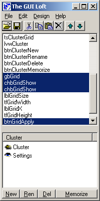
The Main window contains a list of all controls. It's main
purpose is to display a complete list of controls (including
intangible controls, such as Timers), select controls that
are obscured, and let you rearrange the control order.
You can also group controls into Clusters (see below).
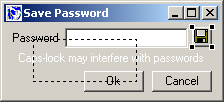
The Design window allows you to manipulate the window and
it's controls visually.
Select, move and resize controls with the mouse. Or use the
keyboard to fine tune size and position.
The Tools pallette contains all the currently available controls.
Click to insert a new control in the middle of the Design
window.
Currently supported controls are:
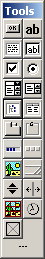
- Window/DialogBox/ToolbarWindow
- Button
- Label
- TextField
- RadioButton
- CheckBox
- GroupBox
- Listbox
- RichEdit
- ListView
- ComboBox
- TreeView
- TabStrip
- Timer
- ImageList
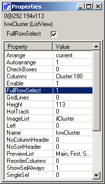
The Properties window contains the properties of the currently
selected controls.
Only properties shared by all selected controls are displayed,
and only identical property values are displayed with their
values (the rest say ``- ? -'' to indicate that they differ).
If you change a property value it will affect all selected
controls, a general principle that holds most of the time.
If you do something, you do it to what you selected.
When you select a property, you get the opportunity to edit
it's value at the top of the screen (I tried to implement
edit-in-place but failed due to spotty support in Win32::GUI).
Note: You need to press <Return> to
confirm any changes you type.
Add controls to the window by clicking the corresponding
button in the Tools pallette.
Note: Immediately after the control is added,
it is a good idea to give the control a good (as in ``descriptive'')
name and to change the Text property. Use the property shortcuts
``n'' and ``t'' to do this.
Read the ``Control Names are Global'' section for a few survival
tips regarding names.
Combine the following rules and you have a flexible way to
select just the contols you want.
- Click a control to select (or deselect) it.
- Pressing the Ctrl key means ``keep current selection''.
- Click-n-drag over controls (start outside all controls)
to select them.
- Pressing the Shift key means ``deselect'' when you perform
a click-n-drag operation.
- Right-click on a control to bring up a popup menu where
you can select/deselect the controls located below the mouse
pointer.
- The Mouse
Click-n-drag a control to move all selected controls.
Click-n-drag the corner dots to resize all selected controls.
Press Shift when you start dragging to restrict movement/resize
to either vertical or horizontal.
- The Keyboard
Use the arrow keys to move all selected
controls. Press Ctrl to move faster. Press Shift to resize
instead of moving.
Press the Del key to delete all selected controls.
Align controls with the menu options under Edit | Align,
or right-click in the Design window to align the selected
controls.
Use liberally :)
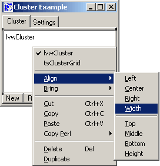
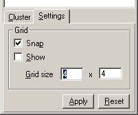
There is a supporting Grid available in the Design window.
The preselected resolution is 4 by 4 pixels with Snap turned
on. Any movements and size changes will snap to the Grid.
If you want you can make the Grid visible as well (althoug
the current implementation is kind of slow).
The Grid settings are stored along with your window.
You edit the properties of the currently selected controls
in the Properties window.
The fastest and easiest way is to click the property and
then press Tab to bring the focus to e.g. the textfield where
you can change the value.
Actually, for some properties there is an even faster way
when you are using the Design window.
- Press ``n'' to immediately edit the name portion of the
Name property.
- Press ``t'' to immediately edit the Text property.
- Press ``b'' to immediately edit the Bitmap property.
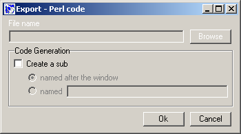
Hidden controls are still visible, but the text is white
to indicate ``invisibility''.
Disabled controls look mostly like they actually do on the
resulting dialog. Text is gray to indicate that the control
is disabled. If the control contains an image, a black cross
is displayed on top of the control.
The tab order is the order in which the controls are added
to the window. That's also the order in which the controls
will gain focus when the user presses the Tab button.
Use the up and down buttons in the main window to change
tab order position of the selected controls.
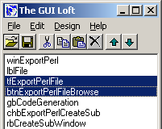
Most controls should have the Tabstop property set. The default
setting works fine for most controls, but you may have to
change it for certain RadioButton controls or if you have
other needs.
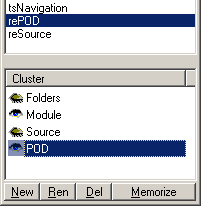
Controls can be grouped into clusters. There are two major
benefits of using clusters.
The first is that you can easily hide some controls temporarily
so you can concentrate on other things. This is very handy
e.g. in the case of TabStrips, when many controls occupy the
same space.
The second (and this is cool) is that you can associate each
Tab in the TabStrip with a Cluster and then have The GUI Loft
manage the Tabs for you at runtime. Refer to the section about
the TabStrip control for information on how to do this.
Let's say you have a TabStrip with a few controls in the
first Tab. To avoid clutter, select the controls and create
a new cluster. Then hide it by double clicking on the eye
icon. Now is also a good time to rename the cluster to sometning
descriptive.
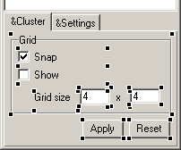
The hidden controls can't be seen or manipulated in the Design
window while hidden, so you can concentrate on laying out
the controls in the second Tab. Select those controls as well,
and create a new cluster. Now you can easily keep track of
which controls belong to which Tab in the TabStrip.
Double click on the cluster eye icon to hide/show it. When
you show the cluster, all controls in the cluster will become
selected.
You can redefine which controls belong to a cluster by selecting
all appropriate controls and then click on the ``Memorize''
button.
Trick: Start by double clicking the cluster
two times to make the controls selected, then add or remove
more controls by Ctrl-clicking them. When you're done, click
``Memorize''.
Controls of hidden clusters are not visible when windows
get built, regardless of the Visible property.
Most controls are pretty straightforward, but some things
you might need to know are non-obvious.
Not all controls are 100% WYSIWYG when you combine weird
flags. When that becomes a problem, preview often.
Windows can be a Win32::GUI::Window, Win32::GUI::DialogBox,
or Win32::GUI::ToolbarWindow (a Window with style WS_EX_TOOLWINDOW).
Windows of type Window and DialogBox seem to have a minimum
size which you can't affect by resizing them. I don't know
if that's a Win32 thing or a Win32::GUI thing.
The ToolbarWindow can be any size, but you still can't resize
the design window. However, you can change the Width property
in the Properties window and get a smaller ToolbarWindow.
Preview to see the actual size.
Property: Controlparent -- Allow the user to navigate among
the child windows of the window by using the TAB key.
There is no menu control in The GUI Loft beacuse I really
don't see the need; a menu definition is by it's very nature
a very text oriented thing and as such is more suited for
code.
So there is no menu control. However, there is support for
previewing a window with a menu attached using the PreviewMenu
property of a Window.
Each comma separated item in PreviewMenu will be displayed
as a menu bar item when you preview the window. No drop-down
menu, just the actual menu bar.
As an example, the PreviewMenu of The GUI Loft's own main
window looks like this:
&File, &Edit, &Design, &Help
When you eventually create your Window you'll have to provide
a complete menu object of course.
ImageLists are intangible--they aren't visible in the Design
window. You can still select them in the Control list in the
Main window.
The Flags property is probably best left untouched, I'm not
too sure exactly what it does (I have read the docs, I just
don't know what it means in practical terms
:) Anyone?)
The Grow property indicates the maximum number of images
in the ImageList, in case you would like to add more images
to it later.
The Images property is a comma separated string with file
names that contains bitmap files (.bmp). If a bitmap fails
to load, it will not be inserted into the
ImageList (and the index will be screwed up).
Note: It is a good idea to put ImageLists
near the top of the Tab order to make them easy to find in
the Tab order list; that's the only place where they are visible.
During build, ImageLists are always created before regular
controls since they have to exist when other controls reference
them.
You can specify bitmaps. If you do that, it is a very
good idea to save your window first, so all relative paths
get resolved correctly.
Shortcut: Press ``b'' to edit the Bitmap
property.
Trick: There is a non-obvious shortcut for
selecting a .bmp file. If you enter a single space, the Open
dialog will pop up.
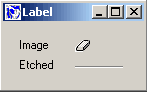
Use a label to display images. The Bitmap shortcut &
trick work here too.
Use a label to display a horizontal bar. Set the Frame property
to ``etched''.
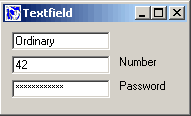
The GUI Loft supports a few features not available using
vanilla Win32::GUI, like Uppercase, Lowercase, OEMConvert,
and Number.
Set Groupstart: 1 and Tabstop: 1 for the first Radio Button
in each group. All other Radio Button controls should have
these properties set to 0.
The only available alignment is left/right.
Listboxes snap their height to the nearest visible line.
I still haven't got that snap algorithm perfect, but it works--kind
of. Preview often.
There is preview support using the PreviewList property.
Each semicolon separated item in PreviewList will be displayed
as a line in the ListBox.
If the Combobox has a drop-down style menu, the height of
the Combobox decides the height of that menu when dropped
down.
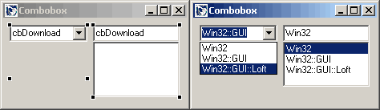
AutoHScroll -- Automatically scrolls the text in an edit
control to the right when the user types a character at the
end of the line. If this style is not set, only text that
fits within the rectangular boundary is allowed.
DisableNoScroll -- Shows a disabled vertical scroll bar in
the list box when the box does not contain enough items to
scroll. Without this style, the scroll bar is hidden when
the list box does not contain enough items.
You can specify the name of an ImageList control to use.
If the ImageList control doesn't exist, it simply won't be
used.
There is preview support using the PreviewTree property.
Each semicolon separated item in PreviewList is a branch
in the tree.
Each comma separated item in the branch is a node. The first
node in the branch is at the top level, the rest are located
below.
After the node text, you can (but don't have to) specify
which image index in the attached ImageList control to use.
Example:
Visible:0, Button:1, TreeView:1, Custom:1;
Invisible:0, Timer:1, ImageList:1
+ Visible
| |- Button
| |- TreeView
| |- Custom
|
+ Invisible
|- Timer
|- ImageList
The ListView has a lot of properties to
set, so the control is semi-WYSIWYG. Preview often.
- You can specify the name of an ImageList control to use.
If the ImageList control doesn't exist, it simply won't
be used.
- You can add columns using the Columns property.
Each semicolon separated item in Columns is a new column
After the column text, you can specify the columns width.
Example:
First name:120; Last name:100
- There is preview support using the PreviewList property.
Each semicolon separated item in PreviewList is line
in the tree.
Each comma separated item in the line is a cell text.
After the line, you can (but don't have to) specify which
image index in the attached ImageList control to use.
Example:
Johan, Lindström:1; Peter, Lindström:3
- The Toolbar is kind of tricky to display in design mode
(read: I'm lazy), so the control is semi-WYSIWYG. Preview
often.
The toolbar snaps to the top or bottom of the window
(the Valign property), and always fills the entire window
width.
- You need to define each button with the Buttons property.
Each semi colon separated item in Buttons is a button
in the image Bitmap with the size of the properties BitmapWidth
x BitmapHeight
Each button item contains four comma separated values:
id, state, style, string.
id: The identifier for this button as
passed to the ButtonClick event.
state: The state flag as defined in
the Win32 API (Common controls). 4 is a normal command
button.
style: The style flag as defined in
the Win32 API (Common controls). 0 is a normal command
button. 1 is a separator.
string: Not to sure what this does in
Win32::GUI. It might be unused (please let me know if
you find out).
Example: 0, 4, 2, 0; 1, 4, 0, 0; 2, 4, 0, 0
You can place the StatusBar control anywhere in a Window,
but when displayed it will be placed at the bottom of the
window. Just like in Win32::GUI.
The Pos property isn't WYSIWYG, so you'll always see the
control as if Pos == 0. Preview often.
The TabStrip has a lot of properties to set, so the control
is semi-WYSIWYG. For example, there is no WYSIWYG support
for the Buttons property. Preview often.
- Add tabs using the Tabs property. Each semicolon separated
item in Tabs is a separate Tab.
- Associate tabs and clusters using the Clusters property.
Each semicolon separated item in Clusters should be the
name of an existing cluster. The first tab in Tabs and the
first cluster in Clusters are connected, etc.
When you build the window, The GUI Loft will attach the
clustered controls to the correct tab and manage the TabStrip
for you using a Win32::GUI::TabStripGroup object.
For this to work seamlessly, only the initial (the leftmost
tab) cluster should be visible when you save your Design.
The other clusters in the TabStrip should be hidden.
- The Bottom property doesn't seem to work. On the other
hand, the Right property seems to do what Bottom doesn't,
so use that one.
Timers are intangible--they aren't visible in the Design
window. You can still select them in the Control list in the
Main window.
During build, Timers are always created after regular controls
so they don't start firing off events before everything is
done (or maybe if they don't start before Dialog()
is called, I don't know).
A Win32::GUI::Resizer object is used to manage the window's
Resize event for you. In most cases, this will absolve you
from manually coding that boring part of the GUI.
If you have very special needs you may have to do this yourself
anyway, either using the Win32::GUI::Resizer class or with
straight Win32::GUI code.
- ResizeH -- When the window width changes, change the
(left|width) of the control.
- ResizeHMod -- When the window width causes ResizeH to
change, modify the change with a piece of code.
- ResizeV -- When the window height changes, change the
(top|height) of the control.
- ResizeVMod -- When the window height causes ResizeV to
change, modify the change with a piece of code.
- Let's say you have an Ok button in the bottom right corner
of your window. You want it to stick to the corner when
you resize the window.
``When the window Width changes, I want by button's Left
to match that change. When the window Height grows, I
want by button's Top to do the same.''
You set ResizeH to ``left'', and ResizeV to ``top''.
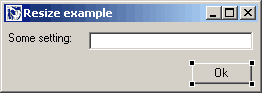
- Let's say you have a Label and a Textfield at the top
of the window. The Textfield goes all the way to the right
side of the window, and it should stay that way when you
resize the window.
``When the window Width grows, the Label shouldn't move,
but the Textfield's Width should''.
You set ResizeH for the Textfield to ``width''.
The ResizeHMod and ResizeVMod properties are used to modify
how much the control should move/resize when the window changes
size. For example:
- When the window Width increases, the control's Left property
should decrease instead of increase.
- When the window Width increases, the control's Left property
should increase, but only half as much (maybe because there
are two controls next to each other, and they share the
window Width).
The value of the Resize?Mod property should a valid Perl
expression, resulting the new value. $_ is set to the ``original''
value. Examples:
- Cut
the resize change in half
- $_ / 2
- Negate
the resize change
- 0 - $_
Invalid Perl code will result in an error when the window
is being built, and the buildWindow() method
will return undef (so check this return value, ok?). In The
GUI Loft, the Test window command will give you an
error message.
Use the menu items under Edit | Copy Perl to put useful things
in the clipboard.
Because Win32::GUI works the way it does, it is somewhat
easy to get name clashes. This is important since event handlers
(e.g. sub btnOk_Click) are always located in package main
unless you fiddle around in impractical ways; controls names
are in effect global.
So it is a good idea to give controls names that are likely
to be unique. ``btnOk'' isn't really that good, since you
are likely to have an Ok button in many windows in your application.
Only one Radio Button in a group can be checked at a time.
You create groups by setting the Groupstart and Tabstop property
on the first Radio Button in the group. The other Radio Buttons
in the group should not have these properties set.
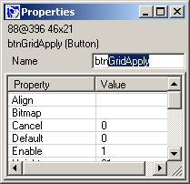
Don't leave the default names unless you are making a throwaway
prototype. They'll gang up on you and you'll just get confused.
Besides, it's lousy craftsmanship to leave junk in your code...
Use the descriptive prefix in the default name, like ``btn''
for Buttons, ``lbl'' for Labels, and ``chb'' for CheckBoxes.
It'll help you recognize what kind of type of control it is,
and you can use the same name for e.g. both the Label and
Textfield that is used for e.g. Age (``lblAge'' and ``tfAge'').
The program will help you do this when you use the ``n''
property shortcut and only highlight the actual name portion
of the Name property. Use it, I put it there for a reason
:)
Not that I'm an expert or anything, but here are a few thoughts
on GUI design in general.
It's about design. Visual design. User interface design.
I have a saying:
The Interface IS the Application
Well, to the user it is. The UI is all there
is.
An ugly user interface reflects badly on your application.
No matter how elegant, well structured, and easy-to-maintain
the code is, an ugly and awkward user interface will make
your program a pain to use.
So make it exciting, easy to use, well disposed and nice
to look at. Remember, first impressions last.
Or rather, forget the box. Forget what you see. That's the
weakness with WYSIWYG--what you see is all
you get. But it doesn't have to be like that.
A GUI can be dynamic; you can change the layout in response
to some user action, move things around, hide or show controls,
change the size of the window.
Don't let the design tool limit your ways. Let it make hard
things easy (the visual layout), so you can implement the
hard things in code (the dynamic behaviour).
What if you're not a great GUI designer? What if, instead,
you're a kick ass programmer?
Let someone else design the dialog boxes and do what you
do best and have most fun doing.
It's a Win32::GUI Win-win Solution(tm) :)
If you only read one book... and so forth. But this is the
book about user interface design. Although it's about GUIs,
if you ever, ever, wrote a program with a
UI (and I know you did), this book is useful because it forces
you out of geek mode long enough to realize why you wrote
the program in the first place.
"About Face: The Essentials of User Interface Design"
Alan Cooper
ISBN: 1568843224
http://www.amazon.com/exec/obidos/ASIN/1568843224
MicroAngelo is a good icon editor (but there are loads of
them out there). 30-day trial available at:
http://www.impactsoftware.com/
I also use Photoshop and ImageReady for .bmp files, but only
beacause I already know those programs. For icons images,
it's pretty much overkill, although the color management is
nice.
Icons for all occations:
http://www.eldos.org/icon/icons.html
Take some time to browse the collection to get an idea of
what's there when you need it. Their Thumbnailer program is
good too (30 day trial).
If you need support for something, please tell me. I need
to know what doesn't work and what doesn't work the way you
want it.
In particular, I'm interested in the more esotheric controls
(like e.g. Rebar), which I haven't toyed with yet. So a working
piece of code would be a good help.
Johan Lindström, mailto:johanl@bahnhof.se
The general paint routine is slow (could probably be optimized).
The grid paint routine is even worse (could, no... should
be optimized)
The handling of properties updates when moving controls is
slow (could be optimized)
The command buttons seem to lose their bitmap sometimes...
I don't know if this is my fault or a Win32::GUI thing, but
rather suspect the latter... :/
Keyboard handling is home grown (Accelerators doesn't work
yet). So if you press two keys rapidly in succession, the
second one may be discarded. Might be annyoing if you are
fast with the Ctrl-C, Ctrl-V.
The GUI Loft is Copyright (c) Johan Lindström, johanl@bahnhof.se
The Perl Artistic license applies.
|